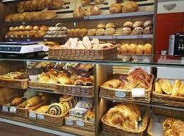

BoltShop |
|  |
Ha szereted a friss pékáru és a pénz illatát, akkor ajánlom hogy megvedd ezt a boltot mielőtt más teszi ezt meg! Érdeklődj mihamarabb: Tel.: 0690/555-98-87 |
|
Valódi pékáru-mennyország tárul az ember elé, ha belép a boltba, bár az üzlet nem nagy, a kínálat óriási. A pultokon klasszikus pékáruk sorakoznak - kenyérből 6-7 fajta, plusz az állandó kínálat mellé napi 3-4 "vendégkenyér" is kerül. A kiflikből és zsemlékből is bő a választék, nem beszélve a sok gusztusos péksüteményről, melyekben gyönyörködve nagyon nehéz eldönteni, mit is válasszon az ember. Az üzletben a teljes kiőrlésű, cukor hozzáadása nélkül készült pékáruk kínálata is széles - naponta 80-100 helyben készült termék közül válogathatunk. INGYEN PÉNZT TERMEL!!! |
|
| A BoltShop Kft. egy üzletekkel kereskedő hely, ahol mindenféle, jól kamatozó helyet tudsz venni. Minden hétfőn új áru érkezik, érdemes visszajönni! |